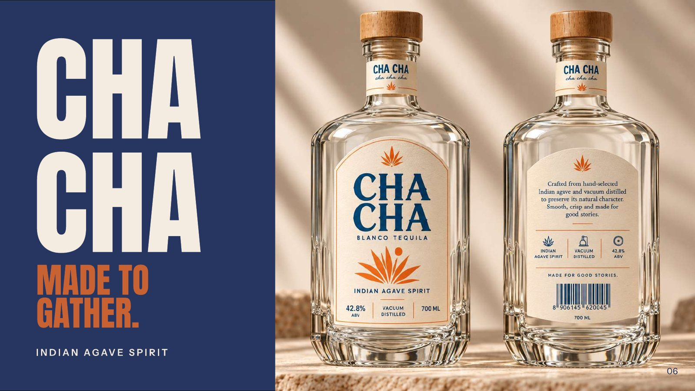
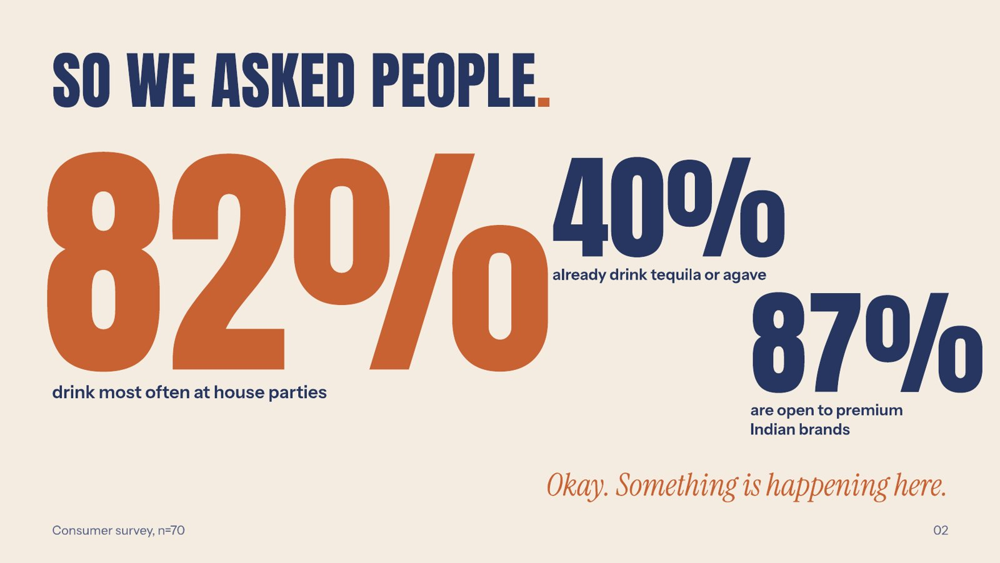
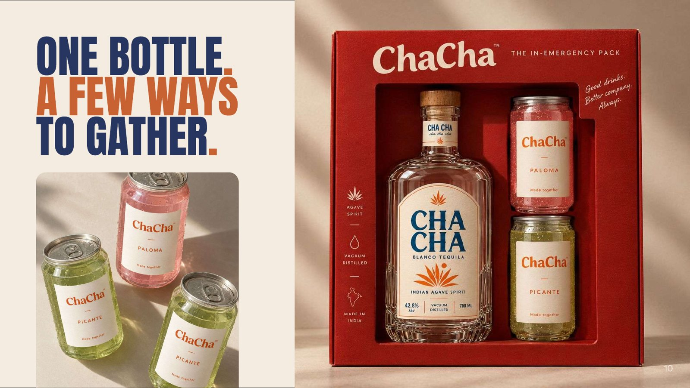

Cha Cha
A go-to-market plan for Cha Cha, a premium Indian agave spirit. We ran our own consumer survey, used clustering to choose one segment to win first, and built the brand, price and launch around them.
The opening
We started with a survey of young urban drinkers and checked it against industry data: What India Is Drinking 2026, covering 155 bars across 18 cities, and IWSR. 82% drink most often at house parties, 40% already drink tequila or agave, and 87% are open to premium Indian brands. India's tequila volume grew 34% in 2025 and the category is worth about ₹840 crore.
The shelf told the other half of the story. The same imported names lead the bars, Camino and Cuervo win on price, and only one Indian brand makes the top ten, above ₹3,000. That left a gap for a premium Indian agave spirit around ₹2,500, built for house parties. The catch: 58% still link imports with quality, so trust had to be earned.
The problem
The survey showed two very different customers. People already into agave could not find enough choice: 75% faced at least one access barrier. Newcomers had the opposite problem. Price was fine; they did not know whether they would like it or how to drink it.
The approach
K-means clustering on the survey split these into two segments, and we chose to win the premium agave explorer first. They were 45% of the sample; 62% already drink tequila, 73% will pay ₹2,500 or more, and at the same price they lean Indian over imported. Their problem is access, which is exactly what a new Indian brand solves.
The plan
The price is fixed at ₹2,500 (above Cuervo, below El Goonda and Pistola), with value added through packs and kits and no discounts. The brand stands on Indian agave (63% did not know agave grows in India), vacuum distillation for the smoothness this segment rates 4.7 out of 5, and the idea of a bottle made for gathering. Ready-to-drink Paloma and Picante cans in a gift pack give newcomers an easier first sip.
The launch runs from curiosity (teasers, a waitlist, creator kits) to trial (tastings, bar activations, events) to purchase in stores, with online content kept within India's alcohol advertising rules. It starts in Goa, then Haryana and Maharashtra.
Targets
- Year one: 8,400 to 14,000 bottles, roughly ₹1.8 to 3.1 crore
- Eight-month launch: Goa, then Haryana, then Maharashtra
- A 1,500-person waitlist, 50 creator kits and 10 events
- 20% of tasting attendees going on to buy
- 1,000 first-time consumers by month eight
What I learned
The research changed the plan. Two customers were stuck for opposite reasons, and a launch that tried to serve both at once would have served neither.


